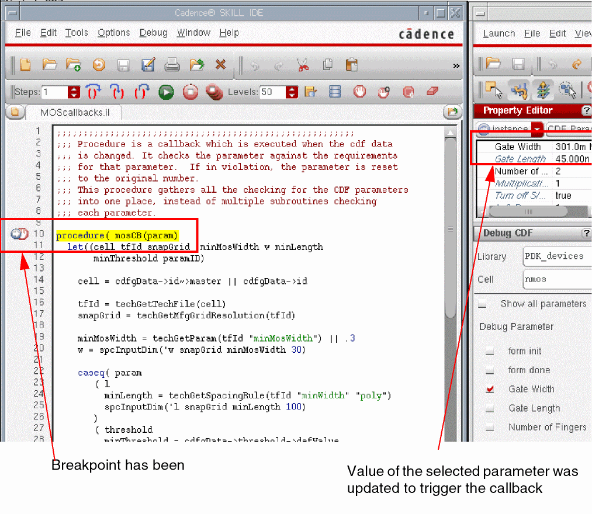

7
Writing Callbacks
Overview
A callback procedure is a Cadence® SKILL language expression that is evaluated when a parameter value changes. Using callbacks is a powerful way to control relationships between parameters and the restrictions on the parameter itself.
Callbacks can be GUI-based or database-based. GUI-based callbacks occur when you modify the values in the parameter form fields. Database-based callbacks occur when the parameter value is modified via a database action. The CDF parameter callback is primarily a GUI-based callback. A GUI-based callback is active when the CDF parameters are displayed in the Add Instance form or the Edit Object Properties form when you use the Create Instance or Edit Properties commands.
CDF callbacks are used for a variety of purposes, such as:
- Validating entered values
- Controlling form appearance
- Computing the values of other CDF parameters, such as derived parameters
The first two of these do not present any significant danger - but the third - derived parameters - can cause major trouble, specifically if the derived value is being used (in simulation, physical verification, or a Pcell, for example).
You can enter a callback as a SKILL expression that you type directly in the callback field of the parameter section of the Edit CDF form. You can also enter a callback by using the ?callback keyword as an argument to the cdfCreateParam function:
cdfParamId = cdfCreateParam(cdfDataId
?type "string"
?parseAsNumber "yes"
?units "lengthMetric"
?parseAsCEL "yes"
?storeDefault "no"
?name "pName2"
?prompt "width"
?defValue 7u
?display "artParameterInToolDisplay(’w)"
?editable "cdfgData->maskLayoutViewName->..."
?callback "cdfgData->pName1->value =
cdfgData->pName2->value")
In this example, the callback on parameter pName2 sets the value of parameter pName1 to the new value when the value of pName2 changes.
A callback can also be a call to a function that you loaded previously.
cdfParamId = cdfCreateParam(cdfDataId
?type "string"
?parseAsNumber "yes"
?units "lengthMetric"
?parseAsCEL "yes"
?storeDefault "no"
?name "pName2"
?prompt "width"
?defValue 7u
?display "artParameterInToolDisplay(’w)"
?editable "cdfgData->maskLayoutViewName->..."
?callback "myFunc( )")
In the second example, the callback on parameter pName2 calls the function myFunc( ) when the value of pName2 changes.
When using callbacks, always use the global variable cdfgData to access information about parameter values and default values.
To get the default value for a parameter, type the following expression:
cdfgData->paramName->defValue
To get the current value for a parameter, type the following expression:
cdfgData->paramName->value
To set the value of a parameter, type either of the following expressions:
cdfgData->paramName->value = 10
cdfgData->paramName->value =
cdfgData->paramName->defValue
.libInit file to enable loading only the required callbacks when you open a cellview. Defining callbacks in the .cdsinit file loads all the callbacks irrespective of their which can impact performance. Loading Callbacks
Once you define the SKILL callback procedures, you need to load the files. From the Command Interpreter Window in your .cdsinit file, type
load("path/callbacks.il")
You must make sure that the callbacks are loaded before you use the library and that the callback files are archived whenever you archive the library.
As an alternative, you can attach a callback file to a library. You attach callback files to a library by including a libInit.il file in that library. libInit.il is a text file that contains calls to load other SKILL files or contexts in the library or to initialize autoload properties.
You must always use the file name libInit.il or libInit.ils. You can have one such file in each library. The following example is the contents of a libInit.il file in a microwave library:
load( ddGetObj( "microwave" nil nil "libraProcs" )~>path )
load( ddGetObj( "microwave" nil nil "hpmnsProcs" )~>path )
load( ddGetObj( "microwave" nil nil "mharmProcs" )~>path )
load( ddGetObj( "microwave" nil nil "callbacks" )~>path )
where ddGetObj uses the following syntax:
ddGetObj( libName cellName viewName fileName)
If you attach the file to the library, the file is automatically loaded whenever the library is opened. This guarantees that the functions are defined. In addition, when you archive your library, the CDF callback functions are automatically archived.
Debugging Callbacks
Introducing Debug CDF
Starting with IC6.1.6, you can use a new plugin, Debug CDF, to debug the CDF callback procedures. These are written using simple SKILL expressions for form initialization (forminit), form completion (doneProc), and any parameter’s field value modification (parameter callbacks).
The Debug CDF plugin is not installed by default when you open any CDF-based application window. To install the plugin, select the Debug CDF option from the Windows–Plugins menu. Once installed, the Debug CDF plugin creates the Debug CDF assistant. Using the Debug CDF assistant you can set breakpoints on the available CDF callback procedures for debugging.
Installing Debug CDF
To install the Debug CDF plugin in an application window:
-
From the menu bar, choose Windows–Plugins–Debug CDF.
The Debug CDF assistant is displayed and the SKILL IDE window is launched simultaneously.
You need working knowledge of SKILL IDE to use the Debug CDF assistant. For information about the SKILL IDE window, see Cadence SKILL IDE User Guide.By default, the assistant is docked to the left side of the application window on which it is installed. You can dock/undock the assistant to/from the application window as you would do to any other assistant.
The Debug CDF Assistant User Interface
The Debug CDF assistant consists of the Library and Cell drop-down fields and a list of the CDF parameters.
The Library field consists of a list of libraries based on cds.lib. The Cell field consists of a list of cells based on the selected library. By default, the Library and Cell fields are blank. When you select a library (lib) and a cell (cell) from the respective drop-down fields, the Debug CDF plugin displays a list consisting of parameters (and forminit and doneproc) for which callbacks are defined. Each parameter is displayed with a check box next to it, as shown in the figure below:
If a parameter’s callback is a ‘simple’ function and the function is loaded, the callback is considered debuggable. Callbacks that are not loaded are considered ‘not debuggable’.
To view all the callbacks defined for the selected lib/cell pair:
-
On the Debug CDF assistant, select the Show all callbacks check box.
The Debug CDF assistant displays all callbacks defined for the
lib/cellpair regardless of whether they are debuggable or not. Callbacks that are debuggable are enabled; otherwise they are disabled.
To debug a callback, Debug CDF plugin requires support files, which contain the callback procedures and other SKILL code necessary for a design. Typically, these support files are included in the libInit.il file (for the selected library) and are therefore automatically loaded by the Debug CDF plugin. However, if these support files are not included in libInit.il, you will need to load these files manually after the SKILL IDE window is launched.
Starting the Debug Process
-
On the Debug CDF assistant, select the check box next to the parameter for which you want to examine/debug the callback procedure.
The SKILL IDE window is automatically displayed with the corresponding source file and the breakpoint marker on the left margin of the source file, as shown below.
-
To trigger a parameter callback, modify the value of the selected parameter on the form displayed by using the Edit Properties or Create Instance commands, or from the Property Editor assistant.
To trigger theformInitProccallback, update the form containing the required CDF parameters.-
The
formInitProccallback debug process is executed whenever the Edit instance Properties form is seeded with a new instance. So whenever you select the instance in the design, theformInitProcis triggered. -
The
formInitProccallback debug process is triggered whenever the Create Instance form is seeded with a new combination of the lib/celllib/cellpair that contains CDF data.
To trigger thedoneProccallback, click either the Apply or OK button on the form containing the CDF parameters.
Now, since the breakpoint has been set and the callback procedure is triggered, the execution of the callback will pause at the breakpoint. This would happen at the entry point of the callback procedure.
 -
The
- In the SKILL IDE window, you can use debugging commands, such as Step, Next, and Continue, and set break points to examine/debug the callback procedure. For information about SKILL IDE debugging commands, see Cadence SKILL IDE User Guide.
Terminating Debug CDF
To terminate the Debug CDF plugin from an application window:
-
From the menu bar, choose Windows–Plugins–Debug CDF.
The Debug CDF assistant is removed from the application window. In addition, the Debug CDF option is also removed from the assistant list that is displayed when you right-click the menubar or toolbar. Also, all breakpoints that were set by the Debug CDF plugin during the debugging process are cleared.
Starting Debug CDF in Multiple Windows
In a Virtuoso session, you can start multiple Debug CDF plugins in multiple windows. The Debug CDF plugin tracks all breakpoint settings based on the lib/cell pair. So, when you set breakpoints for the lib/cell pair in the Debug CDF assistant in one window, the same settings are reflected in the other window's Debug CDF assistant when you select the same lib/cell pair.
For example, when you set breakpoints for the PDK_devices/nmos pair in the Debug CDF assistant installed in VSE in one window, the same breakpoints will be visible when you start the Debug CDF assistant in another VLS window and in the assistant you will see the PDK_devices/nmos as the lib/cell pair.
lib/cell breakpoints that are not shared by another window’s Debug CDF plugin are removed. All the breakpoints set by the Debug CDF plugin are removed when no active Debug CDF plugins exist in any of the windows of a Virtuoso session.
NFET Example
To understand how to use callbacks, look at the NFET CDF description. The following callback functions are specified for the NFET component:
mosLayout Callback
In the NFET CDF description, when you select the layout.pwr option of the maskLayoutViewName parameter, the values of the other parameters are constant. You can use the
procedure( mosLayout( )
if((cdfgData->maskLayoutViewName->value ==
cdfgData->maskLayoutViewName->defValue)
then ; It is layout. Use defaults.
cdfgData->w->value=cdfgData->w->defValue
cdfgData->width->value=cdfgData->width->defValue
cdfgData->l->value=cdfgData->l->defValue
cdfgData->length->value=cdfgData->length->defValue
cdfgData->bend->value=cdfgData->bend->defValue
cdfgData->bendt->value=cdfgData->bendt->defValue
cdfgData->ad->value=cdfgData->ad->defValue
cdfgData->as->value=cdfgData->as->defValue
cdfgData->pd->value=cdfgData->pd->defValue
cdfgData->ps->value=cdfgData->ps->defValue
cdfgData->diffD->value=cdfgData->diffD->defValue
else ; It is layout.pwr. Use known values.
cdfgData->w->value="880u"
cdfgData->width->value=880
cdfgData->l->value="12u"
cdfgData->length->value=12
cdfgData->bend->value=cdfgData->bend->defValue
cdfgData->bendt->value=cdfgData->bendt->defValue
cdfgData->ad->value="6.16e-09"
cdfgData->as->value="6.16e-09"
cdfgData->pd->value="0.001774"
cdfgData->ps->value="0.001774"
cdfgData->diffD->value=nil
)
)
pcMOSw Callback
The pcMOSw callback is similar to the pcMOSl callback. pcMOSw checks the input, sets the width parameter, determines if there should be a bend, and calculates some of the simulation parameters:
procedure( pcMOSw( )
prog(()
if( (cdfgData->maskLayoutViewName->value ==
cdfgData->maskLayoutViewName->defValue)
; Do this only if maskLayoutViewName is
; layout. Otherwise, mosLayout sets it.
then
tmp = evalstring(cdfgData->w->value)
if( (tmp && (typep(tmp)!=’flonum))
then
error("Width value must be a floating
point number. Set to default." )
cdfgData->w->value = cdfgData->w->defValue
cdfgData->width->value =
cdfgData->width->defValue
cdfgData->bend->value =
cdfgData->bend->defValue
cdfgData->bendt->value =
cdfgData->bendt->defValue
cdfgData->ad->value = cdfgData->ad->defValue
cdfgData->as->value = cdfgData->as->defValue
cdfgData->pd->value = cdfgData->pd->defValue
cdfgData->ps->value = cdfgData->ps->defValue
return(nil)
)
tmp = ( tmp / 1e-6 )
if( (tmp < cdfgData->width->defValue)
then
error("Width value is less than
minimum (7u). Set to default." )
cdfgData->w->value = cdfgData->w->defValue
cdfgData->width->value =
cdfgData->width->defValue
cdfgData->bend->value =
cdfgData->bend->defValue
cdfgData->bendt->value =
cdfgData->bendt->defValue
cdfgData->ad->value = cdfgData->ad->defValue
cdfgData->as->value = cdfgData->as->defValue
cdfgData->pd->value = cdfgData->pd->defValue
cdfgData->ps->value = cdfgData->ps->defValue
return(nil)
)
if( (tmp > 240 )
then
error("Width value is greater than
maximum (240u). Set to default." )
cdfgData->w->value = cdfgData->w->defValue
cdfgData->width->value =
cdfgData->width->defValue
cdfgData->bend->value =
cdfgData->bend->defValue
cdfgData->bendt->value =
cdfgData->bendt->defValue
cdfgData->ad->value = cdfgData->ad->defValue
cdfgData->as->value = cdfgData->as->defValue
cdfgData->pd->value = cdfgData->pd->defValue
cdfgData->ps->value = cdfgData->ps->defValue
return(nil)
)
if( (tmp <= 240 )
then
cdfgData->maskLayoutViewName->value =
cdfgData->maskLayoutViewName->defValue
grid = round(tmp/0.5)
newwidth = grid*0.50
if( (newwidth != tmp)
then
error("Width is set to nearest value
on 0.50 micron pitch.")
cdfgData->w->value =
sprintf(s "%g" (newwidth * 1e-6))
)
if( (tmp > 120) ;criteria for setting bend here
then
cdfgData->width->value = tmp/2
cdfgData->bend->value = t
cdfgData->bendt->value = 1
cdfgData->diffD->value = nil
else
cdfgData->width->value = tmp
cdfgData->bend->value =
cdfgData->bend->defValue
cdfgData->bendt->value =
cdfgData->bendt->defValue
)
)
cdfgData->ad->value =
sprintf(s "%g" (tmp * 7.0 * 1e-12))
cdfgData->as->value =
sprintf(s "%g" (tmp * 7.0 * 1e-12))
cdfgData->pd->value =
sprintf(s "%g" ((tmp + 7.0) * 2e-6))
cdfgData->ps->value =
sprintf(s "%g" ((tmp + 7.0) * 2e-6))
)
)
)
pcMOSl Callback
When the length and width parameters for the NFET CDF description were created, the l and w parameters already existed for one of the simulators. Instead of prompting the user twice for the same information, callbacks attached to the l and w parameters can update the length and width parameters automatically.
The pcMOSl callback runs whenever the value of l changes. The callback verifies that the maskLayoutViewName parameter value is layout. (For the other option, layout.pwr, the parameter values are controlled by the mosLayout callback, shown in the previous section.) The callback then checks the new value against the minimum value, the maximum value, and the grid. If the value is not valid, the callback resets the lengths to the default value. If the value is valid, the callback sets the length parameter value. The following example shows this process:
procedure( pcMOSl( )
prog(()
if((cdfgData->maskLayoutViewName->value ==
cdfgData->maskLayoutViewName->defValue)
; Do this only if maskLayoutViewName is
; layout. Otherwise, mosLayout sets it.
then
; Convert input string to float.
tmp = evalstring(cdfgData->l->value)
if( (tmp && (typep(tmp)!=’flonum))
then
error("Length value must be a floating point
number. Set to default." )
; error will send message to CIW
cdfgData->l->value = cdfgData->l->defValue
cdfgData->length->value =
cdfgData->length->defValue
return(nil)
)
tmp = ( tmp / 1e-6 ) ; Convert to user units.
if( (tmp < 3.0)
then
error("Length is less than minimum (3u).
Set it to default." )
cdfgData->l->value = cdfgData->l->defValue
cdfgData->length->value =
cdfgData->length->defValue
return(nil)
)
if( (tmp > 15.0 )
then
error("Length value is greater than
maximum (15u). Set it to default." )
cdfgData->l->value=cdfgData->l->defValue
cdfgData->length->value =
cdfgData->length->defValue
return(nil)
)
; The following checks the value against
; the grid and fixes it if necessary.
grid = round(tmp/0.5)
newlength = grid*0.50
if( (newlength != tmp)
then
or("Length is set to nearest value
on 0.50 micron pitch.")
cdfgData->l->value = sprintf(s "%g"
(newlength * 1e-6))
)
; Set the Pcell param value.
cdfgData->length->value = tmp
)
)
)
Return to top